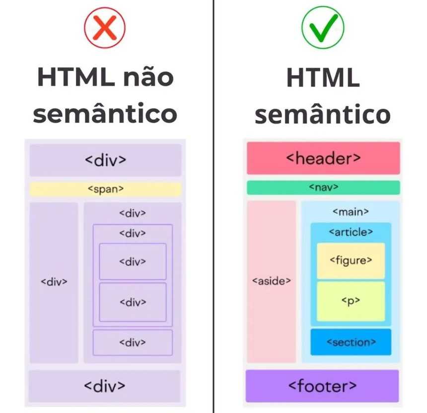

O design de páginas web deve seguir princípios de organização, hierarquia visual e usabilidade para garantir uma experiência clara, intuitiva e acessível aos usuários..
Princípios do Design
- Tipografia: escolha de fontes legíveis e adequadas ao contexto.
- Paleta de Cores: seleção de cores que complementam o conteúdo e a marca.
- Usabilidade: garantir que o site seja fácil de usar e ofereça uma boa experiência ao usuário.
Etapas de Desenvolvimento
- Wireframe: definição da estrutura e disposição dos elementos da página
- Prototipagem: criação de modelos interativos para testar a usabilidade
- Codificação: implementação do design e funcionalidades no código
